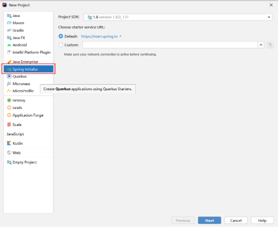
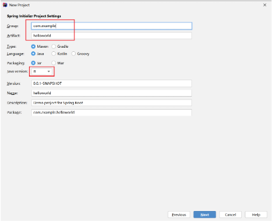
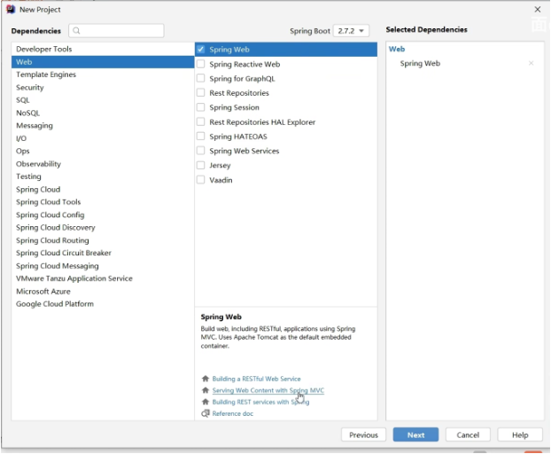
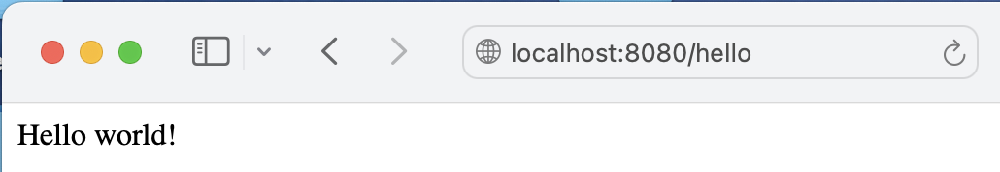
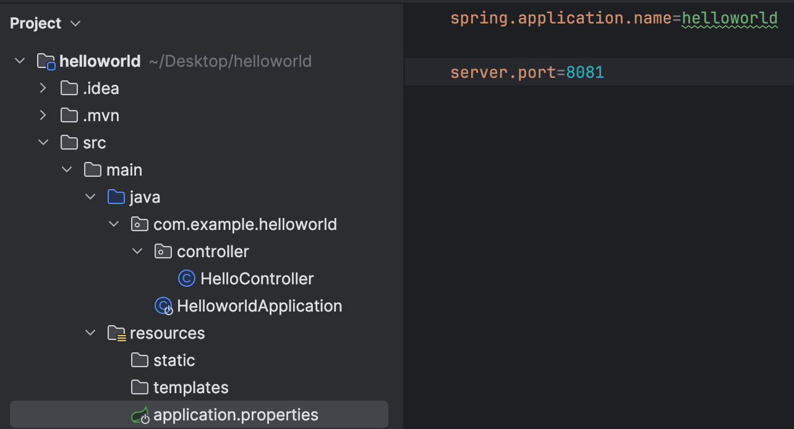
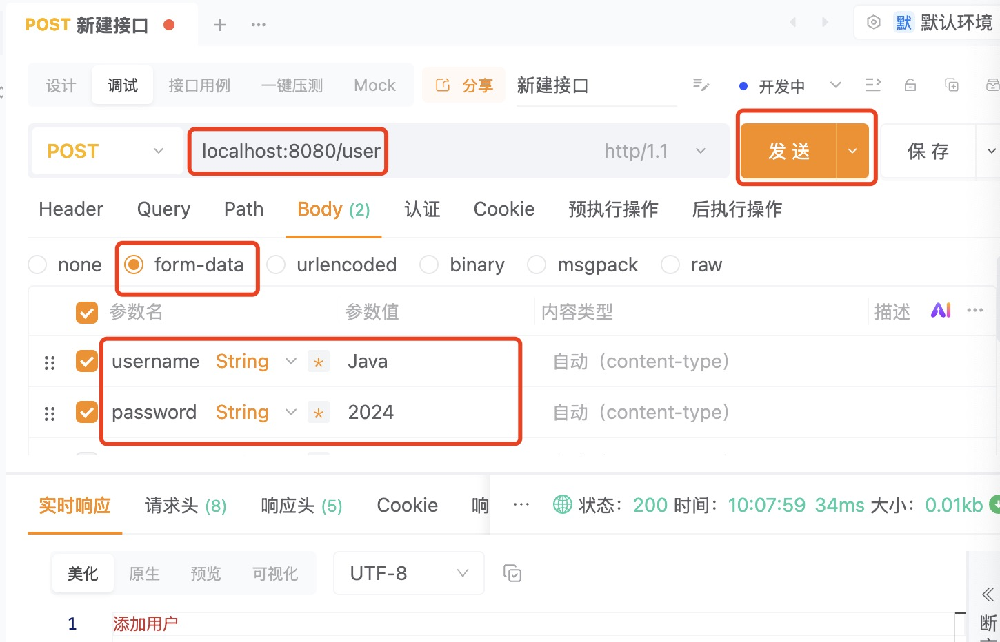

利用IDEA提供的Spring Initializr创建SpringBoot应用

Group：一般输入公司域名；Artifact：项目名称。


创建子目录controller，并在目录controller中，创建HelloController.java文件：
@RestController
public class HelloController {
@GetMapping("/hello")
public String hello(){
return "Hello world!";
}
}
启动项目（即运行HelloworldApplication.java），在浏览器窗口中输入“http://localhost:8080/hello”

若报错8080端口被占用，则可用“server.port=”来自行设置端口，如：

创建entity目录，并在目录entity中，创建User.java文件：
public class User {
private String username;
private String password;
public String getUsername() {
return username;
}
public void setUsername(String username) {
this.username = username;
}
public String getPassword() {
return password;
}
public void setPassword(String password) {
this.password = password;
}
@Override
public String toString() {
return "User{" +
"username='" + username + '\'' +
", password='" + password + '\'' +
'}';
}
}
在目录controller中，创建UserController.java文件：
@RestController
public class UserController {
@PostMapping("/user")
public String save(User user){
return "添加用户";
}
}
在Apipost（可以给后端发送http请求）里新建接口，并发送请求：
